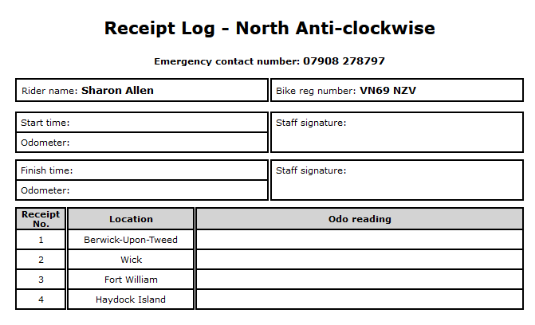

RBLR1000 automation
Background history
When I first got involved with this event it was very labour intensive
and finishers had to wait months for their certificates. Things have
improved dramatically over the years with increasing levels of
automation.
During the pandemic we introduced the staggered starts (05:00, 05:10,
...) as a way to comply with the applicable legal framework. It was
found to be a helpful and convenient improvement to the start process
and has been retained ever since.
In the last few years we have started using automation at Squires as
well as beforehand. In 2022(or 3) we captured odo readings and
start/finish times electronically but the process of using a phone and
updating paper lists proved too much for the workforce and, in any
event, the duplication proved unnecessary.
In 2024, only electronic records were kept and, even though not
everything worked as it should, that proved to be a practicable and
successful approach. In 2025, we'll go much further down the automation
route.
Paperwork
Three pieces of paperwork will continue to be used
- Disclaimers
- Receipt logs
- Master list of entries
Disclaimers
Blank disclaimers are no longer available on the RBLR website so we
retain control of the wording and handwriting. Those with pillions have
signature blocks for rider and pillion.
Receipt logs

These are maintained by the rider, not the staff (except for
signatures). The pre-filled start times are intended to optimise the
mass starts, they can be circled or crossed-out but times on these
sheets are aide-memoires only, definitive times and odos will be
captured electronically. Riders obviously need to retain the relevant
receipts as well as this log.
Master list of entries
This sheet is produced as part of the generation of the database which
forms the basis of all administration of the event. It illustrates the
sequence used throughout the admin systems: alphabetic by lastname,
firstname. The particular purpose of this document is to provide a
reference point when no electronics are available, for example, when
dealing with merchandise (see below).
Process flow
There are seven possible stages or statuses for an entrant:
-
registered (aka 'not signed in') - expected but not at
Squires yet
-
withdrawn (before signing in, aka 'DNS') - not expected at
Squires
- signed in at Squires
- checked out - still out riding
- finisher - checked in at Squires within 24 hours
- late finisher - checked in at Squires after 24 hours
- DNF - ride is abandoned, not returning to Squires
Registration takes place online via the existing Wufoo forms
arrangements. Information captured there is further filtered before
being added to the database. It is surprising how many can't spell their
own name!
Latecomers will also be able to be registered directly into the database
at Squires.
Some people inform us that they won't be coming before the event. Where
that happens, the database is updated to reflect that fact by setting
their status to Withdrawn.
On arrival at Squires, registered entrants will be signed in by staff.
Unregistered entrants can use a separate process combining registration
and signing in.
Check out occurs in Squires carpark on Saturday morning.
DNF, Did Not Finish, occurs when an entrant reports or is reported as
not returning to Squires.
Returning entrants are checked in at Squires by staff. Status is
Finisher if checked in within 24 hours otherwise Late Finisher.
Verification
We're really only concerned with 1000 mile Finishers here,
those needing IBA certification. Others returning to Squires are given a
"finisher" certificate showing completion of the ride.
The minimum requirements for ride certification are
- Checked out by staff at Squires
- Checked in by staff at Squires
- Presentation of signed receipt log
- Presentation of required receipts
Check out and check in will be proved by records on the database and
signatures on the receipt log. The computer will flag if odo difference
is seriously out of order.
No fuel log, witnesses, Spotwalla track or explanations of delays
needed, this is always a pre-verified ride.
Certificates
The bulk of the certificates will be produced shortly before the event
based on information held on the database at the time of printing.
Certificates for late entries, late finishers and some route changes
will be printed and mailed out after the event.
Mere direction swaps no longer result in a need for a new certificate as
the wording has been altered to omit directionality. Swapping between
north and south routes does need a new certificate.
Shop/merchandise
I know little or nothing about how this operates at Squires and have consequently made little or no provision for it.
Automation
Until 2024, all automation for the RBLR involved customisations of ScoreMaster, the rally scoring system. For 2025, a new system Alys has been developed exclusively for automating the RBLR.
Alys involves a cloud or local network based server being accessed from laptops, tablets or phones via a web browser. No special software needed on any device, just any browser. Networking has been operating successfully at Squires for the last few years by hotspotting a mobile phone. In the event of a complete failure of civilisation it might be necessary to revert to old-fashioned paper methods.
Check-out (start)
Riders assemble in the carpark well before the 5am start. Staff will use phones or tablets to record staring odo readings and that act will also record the rider's start time. The phone screen looks like

The initial start time will be 05:00 and this time will be recorded for all odo readings captured before then. Alys will watch the clock and automatically roll over to the next slot, 05:10, as soon as the clock hits 05:01 or when triggered to do so by the staff member. From 05:31 onwards the start time advances one minute at a time.
The ability to trigger a new starting slot enables staff to implement a cutoff for each slot. This might well be needed if more than 200 riders are present at the start.